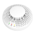
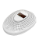
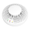
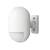
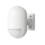
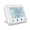
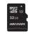

马虎家庭是什么？
为你和全家提供安全防范、检测通知、人工出警服务的智能安全平台 马虎=多个智能设备+一个手机APP+24小时人工出警服务
全屋安全监测
防盗、防火、防泄漏、紧急求救、环境检测，全方位智能守护。
手机操控，不再错过
支持手机远程布撤防，警情发生时，推送+短信+电话，三种方式通知用户，不再担心错过信息，耽误警情。
10元产品责任险
布防情况下用户发生家财损失，保安公司安规赔偿，中国人民财产保险公司承保。
24小时出警服务
危险发生时，用户可请求附近的保安出警服务。触发紧急按钮、火灾等紧急情况，无需用户请求，保安直接出警，确保人员和住宅安全。
无线设备，人性化设计
设备无线设计，外观简约，无需全屋布线，安装、清洁简易，不影响原有的装修美观；主机双通道联网、双供电模式，无惧断网、断电。
摄像头联动设备
用户不仅可在手机实现视频实时监控、回看，还可远程控制镜头转动方向，语音对讲。警情发生时，摄像头立即抓怕画面，保留前后1分钟视频，方便用户快速判断警情，无需反复翻查。
为什么要选择我们？
-
化繁为简-省事
多个设备，一套系统，一键布撤防，家居安全管理，只用一个App就够了！
-
超级安心、省心
警情发生时App提醒、短信、电话第一时间通知到位，行业独有人工出警服务24小时响应，10万元产品责任险财产损失可赔偿！
-
超低费用、省钱
设备免费使用，服务费每天不到1块钱，硬件安装、调试设置、售后维修、出警服务费全包，小杠杆大保障！
设备介绍
-
-

烟雾探测器
●检测到空气中的烟雾浓度过高时将触发报警，防火设备。
●95分贝报警；一级探测灵敏度；符合UL的217号标准：每英尺3.2％的微烟检测有反应。 -

一氧化碳探测器
●常安装于厨房或浴室，检测到空气中的一氧化碳浓度过高时将触发报警，防火防泄漏中毒。
●浓度数码显示、先进电化学技术。 -
燃气探测器
●检测到空气中的燃气浓度过高时将触发报警，防火防泄漏中毒。
●浓度数码显示；SMT工艺制造、高性能催化燃烧式传感器。
-

-
-

红外探测器
●设备探测脚被淹没时将报警，及时检测水浸情况、防止造成财产损失。
-
感应
●安装在固定位置（床头、洗手间等），按下即发出触发紧急报警，应对用户的紧急情况。
-

红外帘幕
●配合其他监测设备使用，当发生报警时即发出强光、高分贝声响。
●双电源设计；信号无线接收；110分贝。 -

玻璃破碎探测器
●装置在玻璃建筑处，感应受到震动时即报警，监测破窗入室情况。
●灵敏度可调；低电提示；防拆报警。
-

-
-
水浸探测器
●设备探测脚被淹没时将报警，及时检测水浸情况、防止造成财产损失。
-
无线紧急按钮
●安装在固定位置（床头、洗手间等），按下即发出触发紧急报警，应对用户的紧急情况。
-
无线声光警号
●配合其他监测设备使用，当发生报警时即发出强光、高分贝声响。
●双电源设计；信号无线接收；110分贝。 -

温湿度探测器
●监测室内温湿度，超出设定范围将报警。
●温度单位可设华氏度（℉）或摄氏度（℃）。
-
-
-
摄像头01
●无线wifi、10米红外夜视、双向语音通话、全景云台、智能移动追踪、镜头智能遮蔽。
-
摄像头02
●防水功能，适合安装室外。
●双天线无线wifi、30米红外夜视、5米远程录音。 -
摄像头03
●无线wifi，10米红外夜视、双向语音通话、最高支持128G内存卡扩展。
-
-
-
无线智能插座
●配合摄像头使用，布防时开启摄像头，撤防时自动断电关闭摄像头，保护隐私更节约资源。
●无线信号发射，可隔墙遥控，无方向限制。 -
信号中继器
●对于多层、超过100平方米的建筑，设备与主机之间信号可能较弱或不稳定，建议每层加装一个信号中继器
-
无线遥控器
●无线操控设备布防、撤防、留守布防、紧急报警。
●实验室10万次按键测试。 -
无线求生环
●用户可随身携带，在防盗主机的信号范围内，按下即可触发紧急报警，具小巧、便携的特点。
-

内存卡
●32g内存，约可存储24小时，实际应用中2~3天。
●增加内存卡后，摄像头支持回看功能，用户亦可自备。 -
SIM卡
●中国移动/联通、每月30M流量
●增加sim
-